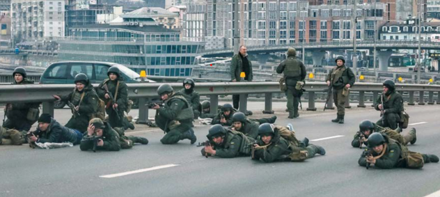
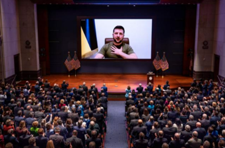
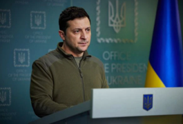
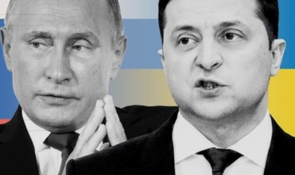

젤렌스키 우크라이나 대통령의
위기 극복 리더십에 대한 외교 심리학적 고찰

요즈음 신문의 국제면을 펴보면 우크라이나-러시아 전쟁 관련 기사가 쏟아지는 것을 매일같이 볼 수 있다. 이렇듯 국내외 언론의 이목이 우크라이나에 쏠린 상황에서 단연 주목을 받고 있는 한 인물이 있다. 그는 바로 ‘볼로디미르 젤렌스키’ 우크라이나 대통령이다. 그가 정치에 입문하여 대통령이 되고, 현재 우크라이나 국민뿐만 아니라 전 세계 사람들의 열렬한 지지를 받기까지의 과정은 마치 한 편의 드라마 같았다.
1978년 우크라이나 크리비리흐의 한 유대인 집안에서 태어나 코미디언을 꿈꾸던 한 소년은, 1997년 코미디 경연프로그램에서 우승하며 신예 코미디언으로 주목받기 시작한다. 이후 배우, 영화감독, 시나리오 작가 등 다양한 분야에서 재능을 발휘하며 명성을 쌓아갔고, 인기 드라마 <국민의 종>에서 역사 교사 출신으로 부패 정권을 신랄하게 비판하며 하루아침에 대통령직에 오르는 주인공 역을 맡아 국민적인 인기를 얻게 되었다. 2019년, 대통령선거에서 그는 재임에 도전한 페트로 포로셴코 전 대통령을 큰 표 차이로 누르며 당선됨으로써 드라마를 현실로 만든다. 하지만, 대선 과정 내내 실현 가능성이 낮은 공약을 내놓으며 인기몰이에 급급했던 그는, 측근이 비리에 연루되고, 자국 내의 뿌리 깊은 부패 문제도 해결하지 못하는 등 국민의 기대에 부응하지 못하면서 ‘지지율 급락’이라는 정치적 위기를 맞는다. 특히 러시아의 침공 직전 일촉즉발의 상황에 그는 나토가입과 관련해 혼재된 메시지를 보내고, 전쟁에 대해 농담을 던졌는데, 러시아가 며칠 뒤 실제로 침공하자 우크라이나 국민의 상당수는 여론 조사에서 그의 전쟁 사령관 능력을 불신한다고 답했다.
하지만 막상 러시아의 우크라이나 침공이 본격화되자 그는 수도 키이우에서 국민 곁을 지키며 소셜미디어를 통해 ‘결사 항전’ 의사를 다지고, 대국민 연설을 통해 국민을 결집하고 사기를 북돋우는 등 훌륭한 전시지도자의 모습을 보여주었다. 이에 그에 대한 세간의 평가도 뒤집히며 그의 리더십도 재조명되고 있다. 영국의 한 역사학자는 그를 윈스턴 처칠과 비교하며, “믿을 수 없는 개인적 용기, 국민과 직접 연결되는 능력, 비타협적인 자세와 최후 승리에 대한 믿음” 등 세 가지를 처칠과의 공통점으로 뽑았다. 또한 EU의 한 고위 관리는 24일 열린 EU 긴급정상회의에서 젤렌스키 대통령의 “이번이 내가 살아있는 모습을 보는 마지막이 될 수 있다”라는 말을 남긴 10분 연설이 서방의 강력한 대러 제재를 이끌어냈다고 평했다.

그렇다면 그가 전시 상황에서 보여주고 있는 위기 극복 리더십에 대해 심리학적 측면에서 살펴보기로 한다. 먼저 그는 위기의 상황에서 회피하거나 도망가지 않고 국민에게 위기 극복을 위한 희망과 단결의 메시지를 나누고 함께 머물렀다. 죽음과 패배의 공포를 피해 도망가기보다 역경의 상황을 수용함으로써 힘을 합해 앞으로 나아갈 수 있는 희망의 메시지를 전할 수 있었던 것이다. 위기 상황에서의 이러한 수용과 용기, 희망의 요소는 긍정심리학에서 언급하는 회복탄력성과 관련된 중요한 강점 요소에 해당한다. 회복탄력성이란 위기를 기회로 전환하며 극복해가는 힘을 의미한다. 얼마 전 아프간의 ‘가니’ 전 대통령이 탈레반군이 수도 카불에 입성하자마자 국민을 버리고 해외로 도피한 사건이 있었다. 전문가들은 ‘가니’의 해외 도피가 정부군의 사기를 떨어뜨리고, 결국은 거센 저항 없이 탈레반이 아프간을 장악할 수 있는 빌미를 제공했다고 비판한다. 이렇듯 위기 상황에서의 지도자가 국민을 버려두고 떠나는 것은 국민에게 배신감을 느끼게 하며, 군의 사기를 저하한다는 점에서 치명적인 실책이 될 수 있다. 그러나 젤렌스키는 수도에 남아 국민 곁을 지키며, ‘우크라이나와 운명을 함께하는’ 책임감과 용기를 보여줌으로써 국민의 항전 의지를 강화하고, 서방의 적극적인 지원을 이끌어냈다.
젤렌스키 대통령은 심리학의 정서지능(EQ) 영역에서 강조되는 공감의 리더십을 발휘하여 위기의 상황에서 필요한 서방의 지원을 효과적으로 이끌어내고 있다. 그는 우크라이나에 대한 지원을 호소하는 맞춤식 연설을 통해 서방 지도자들의 마음을 움직였다. 그는 2022년 3월 8일 영국 의회 화상 연설에서 '햄릿'의 명대사 "죽느냐 사느냐 그것이 문제다"를 인용해 "분명히 답하건대 살아야 한다"라고 역설해 의원들의 큰 박수를 받았다. 3월 17일 독일 의회 연설에서는 "지금 베를린 장벽이 아니라 유럽에 자유와 부자유의 벽이 세워지고 있다"라며 "그 벽을 부숴달라"며 서방의 적극 지원 및 강력한 대러시아 제재를 촉구했으며, 미국 의회에서는 "1941년 진주만을, 2001년 9월 11일을 떠올려보라. 그 일을 우리는 매일 겪고 있다"라며 미국인들의 공감을 이끌어냈다. 이렇듯 젤렌스키는 뛰어난 언어 구사 능력을 바탕으로 적극적 도움 요청과 연설 기회를 공감적으로 잘 활용하여 서방 지도자들, 나아가 전 세계로부터 압도적인 공감과 지지를 얻고 있다.

마지막으로 젤렌스키는 직접적인 소통의 방식으로 외교 심리전에 나서며 적을 회유하며 서로의 피해를 최소화할 수 있도록 평화로운 해결책을 함께 찾고 있다. 심각한 갈등과 대치 국면에서 서로가 윈윈할 수 있으면서 피해를 최소화할 수 있는 대안의 제시는 상호협력적 타결로 나아가는 의사소통 능력에 있어 중요한 요소이다. 최근 그는 러시아 군인들에게 러시아 군인들에게 "살아남을 기회를 드리겠다." 언급하면서 "우리 군에 항복한다면, 점잖은 방식으로 인간적으로 당신을 대할 것"이라고 회유하는 동시에 "전쟁에 책임이 있는 자들, 민주주의 파괴에 책임이 있는 자들, 인민에 대한 탄압에 책임이 있는 자들 모두에 대해 세상이 답할 것"이라며 러시아군이 전쟁범죄에 책임을 져야 한다고 압박하고 있다. 또한 젤렌스키 대통령은 협상 대표단을 통해 러시아와 지속적인 평화회담을 하고 있으며, 푸틴 러시아 대통령에게 정상회담을 제안하며 평화적인 해결방안을 모색하고 있다.
‘호랑이굴에 들어가더라도 정신만 차리면 살아날 수 있다’라는 속담이 있다. 위기의 상황에서 도망가지 않으면서, 오히려 적극적인 소통과 공감적 메시지로 각국 지도자들로부터의 응원과 협력을 얻어내면서 전쟁의 고통 가운데 있는 우크라이나 국민에게 계속해서 함께 어려움을 극복해가도록 희망의 메시지로 단결을 이끌어내고 있는 젤렌스키 대통령의 위기에 빛나는 긍정의 리더십에 마음으로부터 존경과 박수를 보낸다. 그 땅에 속히 평화가 회복되기를 응원한다.
[작성자: 정치팀 홍안수]
세계의 화약고로 급부상하는 우크라이나…
무엇 때문에 이렇게 되었을까
2022년 2월 24일 러시아가 우크라이나의 영토를 침공했다. 서방국가와 러시아 모두에게 중요한 땅인 우크라이나는 현재 여전히 전쟁이 지속되고 있으며 세계의 화약고로 떠오르고 있다.
이 사태의 직접적인 발단은 우크라이나의 나토(NATO: 북대서양조약기구) 가입 움직임이다. 이에 안보 위협을 느낀 러시아가 우크라이나 국경지대에 군사력을 배치한 데에서 시작된 것이다. 러시아는 우크라이나를 사수하기위해 전쟁까지 일으켰고, 미국을 포함한 서방국가들은 이에대해 경제제재 조치를 취하며 응수하고 있다.
서방국가들과 러시아가 우크라이나에 집중하고있는 이유는 무엇일까?
우크라이나는 유럽과 아시아의 교차이자 흑해를 통해 중동으로 연결되는 통로이고 지정학적 중요성이 매우 큰 곳이라고 할 수 있다.
예로부터 우크라이나 지역은 유럽에서 아시아로 향할 때도, 아시아에서 유럽으로 넘어갈 때도 거쳐야하는 곳이었다. 여러 자연환경의 방해 없이 넓게 펼쳐진 평원이기 때문이다. 대도시들이 많은 러시아 서부와 우크라이나 대부분은 동유럽 평원이라고도 불리는 넓은 평원지대이다. 이 평원지대는 동유럽 뿐만 아니라 프랑스, 북독일, 러시아의 중앙까지 펼쳐져 있다고 한다. 평원은 사람이 거주하기 좋고 경제활동도 할 수 있는 이점이 있지만, 전쟁이 일어날 때 군사적으로 방어하기에 어려움이 있는 불리한 조건도 가지고 있다. 만약 우크라이나가 나토에 가입하게 된다면 러시아는 지형적으로 함께 연결되어있는 넓은 평원을 서방에 노출하게 되며 안보의 위협이 증가하는 것이다.
러시아가 바다로 진출할 때도 우크라이나를 장악하는 것이 중요하다. 러시아는 국토 대부분이 추운 지역에 있으므로 버다는 대부분 얼어있는 상태이다. 따라서 부동항을 얻는 것은 러시아의 입장에서 중요한 일 중 하나이다. 2014년에 침공해 사실상 병합한 크림반도는 흑해를 장악하는 데 필수적이기도 하였다. 러시아가 대양으로 나갈 수 있는 곳은 흑해를 경유하는 방법이 유일하기 때문이다. 우크라이나에 대한 통제권이 있다면 흑해를 관리하는데 수월해질 수 있다는 점에서 전략적 가치가 매우 높다고 한다.
또한 우크라이나는 소비에트 연방때 우크라이나 동부에서 군과 업체의 상호의존적인 체계를 시행하여 여러 산업 분야에서 첨단 기술력을 보유하고 있다. 다양한 광물자원 원자재가 풍부한 곳이고 비옥한 토지가 많아 밀, 옥수수를 생산해 전 세계에 공급하는 농업에도 강한 국가이다. 러시아 입장에서 보았을때 옆국가이지만 우크라이나가 서방편에 서게된다면 상당히 위협적인 곳으로 여겨질 것이다.
[작성자: 정치팀 김예솔]
유럽 국가들의 중립국 포기와 대한민국의 입장

러시아는 양 국 전쟁의 휴전 협상 조건으로 우크라이나의 중립국 선언을 거론했다. 중립국이란 중립주의를 외교의 방침으로 하는 나라를 말한다. 유럽에서는 스위스, 핀란드 등 오랜 시간동안 중립국 지위를 지켜왔지만 오히려 북대서양조약기구(나토)에 합류하는 방향으로 생각하고 있다. 러시아가 우크라이나를 침공한 직후 처음으로 대다수의 핀란드와 스웨덴 국민들이 나토 가입을 선호하는 것으로 나타났다. 또한 아일랜드에서는 설문 응답자 절반 이상이 중립국이라는 형태가 시대에 뒤떨어진 형태라 생각하는 것으로 나타났다. 이에 중립국 정치 지도자들은 여론 추이에 집중하고있고 거의 모든 중립 국가가 우크라이나를 지지하는 입장이 되었다. 스위스는 EU회원국도, 나토 회원국도 아니지만 제재를 동참하고 있고 223명의 러시아인들과 관련된 계죄를 동결했다. 스웨덴과 핀란드 같은 경우에는 이미 나토와 정기적으로 군사 훈련을 하고 있으며, 1995년 EU에 가입하면서 사실상 중립국을 포기한 것으로 판단된다. EU 상호방위조약에서, 한 회원국이 자국 영토에서 무장 공격으로 희생자가 발생하면 다른 회원국들이 구호와 지원에 나설 의무가 있다고 규정하고 있다. 이는 나토 헌장 5조의 약한 형태이다. 하지만 내부적 비판도 상당히 있기 때문에 완전히 중립국가들이 중립을 포기한 것으로 보는 것은 어렵다. FT는 우크라이나에서 멀리 떨어진 국가들까지 국방정책을 재검하고 있다는 사실은 유럽의 분위기가 얼마나 달라졌는지를 보여준다고 분석했다.
대한민국은 과거 침략을 받은 안 좋은 기억이 있지만 정말 많은 국제사회의 도움을 받아 이겨낼 수 있었다. 대한민국은 여전히 침략 당할 수 있는 환경에 놓여 있으며 우리가 다시 침략을 받게 된다면 그 때에도 다른 국가들의 도움을 받게 될 것이다. 그러나, 이번 우크라이나 사태에 대한 대한민국의 반응이 미온적이라며 국제사회의 비판을 받고 있다. 우크라이나 국민들의 억울함과 러시아의 만행을 다 알고 있지만 여전히 러시아와의 경제적 협력 관계는 포기하지 못 하고 있기 때문에 대한민국 정부는 제재를 제대로 하지 못 한다. 이는 한국 전쟁 당시 대대적인 원조를 받은 한국이 미 동맹국에서 이탈하지 말아야 한다는 이야기까지 나아갔다. 특히, 한국과 러시아의 관계에서 중요한 부분은 ‘에너지’이다. 러시아는 화석연료가 수출의 60% 이상을 차지할 정도로 화석연료 수출을 유럽 시장에 의존한 편이다. 화석연료는 한국의 1차 에너지 수요 85% 이상을 차지할 정도로 한국은 러시아와 중요한 관계에 놓여있다. 여기서 한국이 그린뉴딜 약속을 이행하고 대규모 청정에너지 투자로 방향을 틀어 러시아에게서 화석연료 수입을 확 줄인다면 러시아에 대한 에너지 의존을 끝낼 수 있다. 이러한 상황에서 한국은 어떤 방향으로든 강경한 대응을 하지 못하는 중이다. 국내･외 전문가들은 국회가 러시아의 우크라이나 침공 규탄 결의안을 하루 빨리 통과시켜야 한다며 러시아에 대한 한국의 적극적인 제재를 강조하고 있다. 이후의 한국은 여러 고려사항을 따져 경제적으로 단단한 결속을 맺고 있는 러시아와 미 동맹국 사이에서 어떠한 식으로 대처를 할 것인지 지켜볼 필요가 있다.
[작성자: 정치팀 강해인, 차호연]